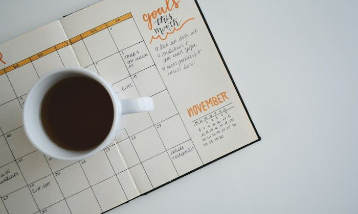
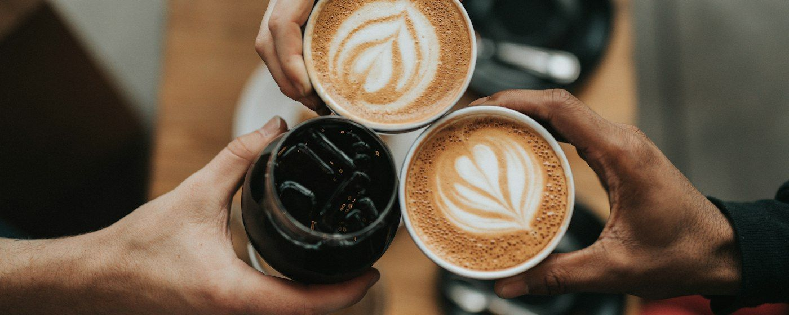
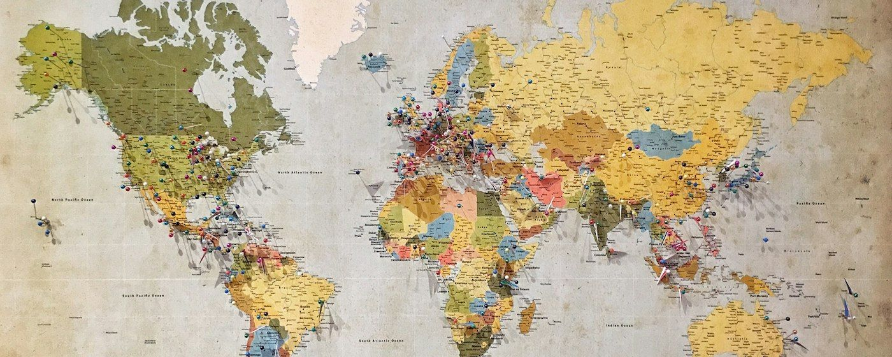

5 novembre 2026Vocabolario, espressioni e grammatica · 5 novembre 2026
▶
Marika, touche une phrase ou le bouton ▶ pour l'écouter. Les exercices se trouvent après chaque partie : réponds au fur et à mesure, ton score s'affiche en haut à droite. Le bouton IT cache ou montre les traductions.Tocca una frase o il pulsante ▶ per ascoltarla. Gli esercizi si trovano dopo ogni parte: rispondi man mano, il punteggio appare in alto a destra. Il pulsante IT nasconde o mostra le traduzioni.
01
Vocabulaire et expressions
Vocabolario ed espressioni
Relire pour bien saisir le sens
ne pas comprendrelocution verbale
ITnon capire
= ne pas saisir le sens de quelque chose
▶
Au début, je ne comprenais pas l'accent marseillais : les gens parlaient trop vite !All'inizio non capivo l'accento marsigliese: la gente parlava troppo in fretta!
▶
Excusez-moi, je n'ai pas compris la dernière phrase.Mi scusi, non ho capito l'ultima frase.
Plus soutenu : ne pas saisir. « Je n'ai pas saisi la blague. » Non ho afferrato la battuta.
Quelques heures à la ferme, en échange du gîte
dormir et manger chez l'habitant en échange de…locution
ITdormire e mangiare a casa di gente del posto in cambio di…
= être hébergé et nourri chez une personne, en contrepartie de quelque chose
▶
En Irlande, Alessio et moi avons dormi et mangé chez l'habitant en échange de quelques heures de travail à la ferme.In Irlanda Alessio e io abbiamo dormito e mangiato a casa di gente del posto in cambio di qualche ora di lavoro in fattoria.
loger chez l'habitant = alloggiare presso privati · en échange de + nom : en échange d'un coup de main (in cambio di un aiuto).
Partir quand même
même siconjonction · concession
ITanche se
= introduit une concession : un obstacle qui n'empêche pas l'action
▶
Même si le billet est cher, nous partirons à Lisbonne en mars.Anche se il biglietto è caro, partiremo per Lisbona a marzo.
▶
Je parle espagnol, même si je fais encore des fautes.Parlo spagnolo, anche se faccio ancora degli errori.
même si + indicatif, comme en italien. Pour une hypothèse : même si + imparfait → conditionnel. « Même si j'avais le temps, je ne regarderais pas cette série. »
Un esprit au calme
mon esprit · ma mentaliténom masc. · nom fém.
ITla mia mente · la mia mentalità
= ma façon de penser, mon état d'esprit
▶
Voyager a complètement changé ma mentalité.Viaggiare ha cambiato completamente la mia mentalità.
▶
Quand je marche au bord de la mer, mon esprit se repose.Quando cammino in riva al mare, la mia mente si riposa.
avoir l'esprit ouvert = avere una mentalità aperta · un état d'esprit = uno stato d'animo, un atteggiamento.
Venise : des stimuli à chaque pas
un stimulus · des stimulinom masculin
ITuno stimolo · degli stimoli
= ce qui provoque une réaction, éveille l'intérêt
▶
À Venise, les stimuli sont partout : les couleurs, les sons, les odeurs.A Venezia gli stimoli sono ovunque: i colori, i suoni, gli odori.
Pluriel d'origine latine : des stimuli. Famille : stimuler, stimulant(e) : un voyage stimulant (un viaggio stimolante).

Novembre, café et agenda
être démotivé(e)adjectif
ITessere demotivato / demotivata
= avoir perdu sa motivation
▶
En novembre, avec la pluie, je suis parfois démotivée, mais le cours de français me redonne de l'énergie.A novembre, con la pioggia, a volte sono demotivata, ma la lezione di francese mi ridà energia.
Contraire : être motivé(e). Noms : la motivation, la démotivation. Verbe : motiver quelqu'un.
La liste des bonnes résolutions…
laisser tomberlocution verbale · familier
ITlasciar perdere, mollare
= abandonner, arrêter de faire quelque chose
▶
J'ai laissé tomber l'espagnol pendant un an, puis j'ai recommencé avec plaisir.Ho mollato lo spagnolo per un anno, poi ho ricominciato con piacere.
▶
Laisse tomber, ce n'est pas grave !Lascia perdere, non è grave!
laisser tomber quelqu'un = abbandonare qualcuno, lasciarlo solo : « Ne me laisse pas tomber ! »
Rire entre amis
se moquer de quelqu'unverbe pronominal
ITprendere in giro qualcuno
= plaisanter aux dépens de quelqu'un, le taquiner
▶
Alessio, tu te moques de moi quand je chante en espagnol ?Alessio, mi prendi in giro quando canto in spagnolo?
▶
Je me moque de toi, c'est pour rire !Ti prendo in giro, è per ridere!
Avec en, le sens change : je m'en moque = non me ne importa niente.
Le temps file…
ne pas voir l'heure passerlocution
ITnon accorgersi del tempo che passa
= être si absorbé par une activité qu'on ne remarque pas le temps
▶
Dans le train pour Paris, nous avons parlé toute la nuit : nous n'avons pas vu l'heure passer !Sul treno per Parigi abbiamo parlato tutta la notte: non ci siamo accorti del tempo che passava!
▶
Avec un bon livre, je ne vois pas l'heure passer.Con un buon libro, il tempo vola.
Contraire : trouver le temps long = annoiarsi, sembrare che il tempo non passi mai.

02
Connecteurs pour s'exprimer à l'oral
Connettivi per esprimersi all'orale
Marika, ces petits mots rendent ton français oral naturel : ils servent à préciser, corriger, confier ou conclure.Queste piccole parole rendono naturale il tuo francese parlato: servono a precisare, correggere, confidare o concludere.
En réalitéin realtà
Pour opposer l'apparence et ce qui est vrai.
▶
Tout le monde pense que la Sardaigne, c'est seulement la mer. En réalité, l'intérieur de l'île est magnifique.Tutti pensano che la Sardegna sia solo mare. In realtà l'interno dell'isola è magnifico.
En faitin effetti, in realtà, anzi
Pour expliquer, préciser ou corriger ce qu'on vient de dire. Très fréquent à l'oral : on prononce le t, [ɑ̃fɛt].
▶
Je pensais partir en juin. En fait, nous partons en mai.Pensavo di partire a giugno. Anzi, partiamo a maggio.
En véritéin verità
Pour insister sur la vérité d'une affirmation. Plus soutenu, plus rare dans la conversation.
▶
En vérité, ce voyage a changé notre façon de vivre.In verità, questo viaggio ha cambiato il nostro modo di vivere.
À vrai direa dire il vero, a essere sincera
Pour introduire une opinion personnelle ou une confidence.
▶
À vrai dire, je préfère les petits villages aux grandes villes.A dire il vero, preferisco i piccoli paesi alle grandi città.
Finalementalla fine
Pour exprimer une conclusion ou le résultat final, souvent différent de ce qui était prévu.
▶
Nous voulions aller au Japon, mais finalement nous sommes restés en Europe.Volevamo andare in Giappone, ma alla fine siamo rimasti in Europa.
Un week-end à Lyon
Marika e Alessio tornano da un fine settimana a Lione. Tocca ogni battuta per ascoltarla.
Alessio▶
Tu as aimé Lyon ? Au début, tu voulais absolument aller à Paris.Ti è piaciuta Lione? All'inizio volevi assolutamente andare a Parigi.
Marika▶
En fait, j'ai adoré Lyon ! À vrai dire, je préfère les villes plus calmes.In realtà ho adorato Lione! A dire il vero, preferisco le città più tranquille.
Alessio▶
Moi, j'avais peur de m'ennuyer. En réalité, il y avait tellement de choses à voir !Io avevo paura di annoiarmi. In realtà c'erano così tante cose da vedere!
Marika▶
Et la cuisine… En vérité, c'est la capitale de la gastronomie.E la cucina… In verità, è la capitale della gastronomia.
Alessio▶
Finalement, c'était une bonne idée de changer de destination.Alla fine è stata una buona idea cambiare destinazione.
Marika▶
Oui, et nous sommes enfin arrivés à prendre des vacances ensemble !Sì, e finalmente siamo riusciti a prenderci delle vacanze insieme!
Nuances à retenir
Sfumature da ricordare
Finalement ou enfin ?
finalement = alla fine le résultat, souvent un changement de plan
▶
Finalement, nous sommes restés à la maison.Alla fine siamo rimasti a casa.
enfin = finalmente après une longue attente, avec soulagement
▶
Le train est enfin arrivé !Il treno è finalmente arrivato!
En fait ou en réalité ?
En fait corrige ou précise ce qu'on vient de dire ; c'est le plus fréquent dans la conversation. En réalité oppose une apparence et la vérité.« En fait » corregge o precisa ciò che si è appena detto; « en réalité » contrappone l'apparenza alla verità.
03
Grammaire : exprimer la réussite
Grammatica: esprimere la riuscita
Pour dire qu'on est capable de faire quelque chose ou qu'une action a réussi, le français utilise deux constructions, toujours suivies de à + infinitif.Per dire che si è capaci di fare qualcosa o che un'azione è riuscita, il francese usa due costruzioni, sempre seguite da à + infinito.
arriver à + infinitifréussir à + infinitif= riuscire a + infinito
Arriver à faire quelque chose
riuscire a fare qualcosa
Pour une capacité, souvent dans la vie de tous les jours, après un effort. Très fréquent à l'oral, surtout à la forme négative : je n'arrive pas à…Per una capacità, spesso nella vita quotidiana, dopo uno sforzo. Molto frequente all'orale, soprattutto alla forma negativa.
▶
J'arrive à comprendre cette explication.Riesco a capire questa spiegazione.
▶
Je n'arrive pas à dormir.Non riesco a dormire.
▶
Nous sommes arrivés à trouver une solution.Siamo riusciti a trovare una soluzione.
Réussir à faire quelque chose
riuscire a fare qualcosa
Pour un succès, un résultat obtenu, souvent après une difficulté. On insiste sur la victoire.Per un successo, un risultato ottenuto, spesso dopo una difficoltà. Si insiste sulla vittoria.
▶
Elle a réussi à terminer son travail.È riuscita a finire il suo lavoro.
▶
J'ai réussi à réserver un hôtel au dernier moment.Sono riuscita a prenotare un albergo all'ultimo momento.
Sans à, avec un nom : réussir un examen, réussir un gâteau, réussir sa vie.Senza « à », con un nome: superare un esame, riuscire bene una torta, riuscire nella vita.
Au passé composé : être ou avoir ?
Al passato prossimo: essere o avere? Tocca una forma per ascoltarla.
arriver à → être + accord
réussir à → avoir
je suis arrivée à
j'ai réussi à
tu es arrivé à
tu as réussi à
elle est arrivée à
elle a réussi à
nous sommes arrivés à
nous avons réussi à
vous êtes arrivées à
vous avez réussi à
ils sont arrivés à
ils ont réussi à
Avec être, le participe s'accorde : Marika est arrivée à…, Marika et Alessio sont arrivés à…Con « être » il participio si accorda, come in italiano: è riuscita, sono riusciti.
À retenir
Toujours à, jamais de
On dit arriver à faire et réussir à faire, exactement comme riuscire a fare.Si dice sempre « à », mai « de ».
Arriver à + lieu ou arriver à + infinitif ?
▶
Je suis arrivée à Nice.Sono arrivata a Nizza. (un luogo)
▶
Je suis arrivée à comprendre.Sono riuscita a capire. (un'azione)
Pour aller plus loin
Per andare oltre: il pronome « y » e il verbo « parvenir à »
y remplace à + infinitif : j'y arrive, je n'y arrive pas, nous y sommes arrivés. Avec réussir, on dit plus simplement j'ai réussi. Dans un texte soutenu, on rencontre parvenir à.« y » sostituisce « à + infinito », come « ci » in italiano: ci riesco, non ci riesco. Nello scritto formale si trova « parvenir à ».
▶
Tu arrives à dormir dans l'avion ? Non, je n'y arrive pas.Riesci a dormire in aereo? No, non ci riesco.
▶
Tu as réussi à joindre l'hôtel ? Oui, j'ai réussi !Sei riuscita a contattare l'albergo? Sì, ci sono riuscita!
▶
Après deux heures de discussion, nous sommes parvenus à un accord.Dopo due ore di discussione, siamo arrivati a un accordo.
Petit récit
Breve racconto: ascoltalo e osserva le strutture in grassetto
▶
Quand Chiara est arrivée à Nice pour son stage, elle n'arrivait pas à comprendre les gens au téléphone.Quando Chiara è arrivata a Nizza per il suo tirocinio, non riusciva a capire la gente al telefono.
▶
Même si elle étudiait tous les soirs, elle était parfois démotivée.Anche se studiava tutte le sere, a volte era demotivata.
▶
En fait, il fallait simplement du temps.In realtà ci voleva semplicemente tempo.
▶
Petit à petit, elle a réussi à suivre les conversations, et un jour, elle est même arrivée à raconter une blague en français !Poco a poco è riuscita a seguire le conversazioni, e un giorno è persino riuscita a raccontare una barzelletta in francese!
▶
Finalement, elle n'a rien laissé tomber.Alla fine non ha mollato niente.

04
Exercices de synthèse
Esercizi di sintesi
05
Production écrite guidée
Produzione scritta guidata
Sujet
Voyager à l'ère d'Instagram : découvre-t-on encore vraiment le monde ?
Viaggiare nell'era di Instagram: scopriamo ancora davvero il mondo?
Marika, écris un texte argumenté d'environ 200 à 250 mots (une vingtaine de lignes). Donne ton point de vue personnel et appuie-toi sur des exemples tirés de tes voyages.Scrivi un testo argomentativo di circa 200-250 parole (una ventina di righe). Dai il tuo punto di vista personale e appoggiati su esempi tratti dai tuoi viaggi.
Pour réfléchir
▶
Aujourd'hui, avant de partir, on regarde des centaines de photos de sa destination.Oggi, prima di partire, si guardano centinaia di foto della propria meta.
▶
Sur place, le GPS nous guide, et les applications nous disent où manger et quel point de vue photographier.Sul posto il GPS ci guida, e le app ci dicono dove mangiare e quale panorama fotografare.
▶
Certains lieux sont envahis par des touristes qui veulent tous la même photo.Alcuni luoghi sono invasi da turisti che vogliono tutti la stessa foto.
▶
Pourtant, voyager, c'est aussi accepter de se perdre, de ne pas tout comprendre et de rencontrer des inconnus.Eppure viaggiare significa anche accettare di perdersi, di non capire tutto e di incontrare degli sconosciuti.
▶
Alors, les réseaux sociaux nous aident-ils à découvrir le monde, ou nous empêchent-ils de le voir vraiment ?Allora, i social ci aiutano a scoprire il mondo, o ci impediscono di vederlo davvero?
Mots utiles
Parole utili: tocca per ascoltare
une destination à la modeuna meta di moda
le tourisme de masseil turismo di massa
sortir des sentiers battususcire dai percorsi più battuti
se perdreperdersi
l'imprévu (m.)l'imprevisto
une rencontre authentiqueun incontro autentico
publier, partager une photopubblicare, condividere una foto
se comparer aux autresparagonarsi agli altri
vivre l'instant présentvivere il momento presente
lever les yeux de l'écranalzare gli occhi dallo schermo
s'ouvrir aux autresaprirsi agli altri
une source d'inspirationuna fonte d'ispirazione
Pour trouver tes idées
Per trovare le tue idee
Comment choisis-tu tes destinations ? Les réseaux sociaux t'influencent-ils ?Come scegli le tue mete? I social ti influenzano?Pistes : de l'inspiration, des idées nouvelles… mais aussi des lieux qui se ressemblent tous.
Te souviens-tu d'un moment imprévu pendant un voyage avec Alessio ? Qu'est-ce qu'il t'a appris ?Ti ricordi un momento imprevisto durante un viaggio con Alessio? Che cosa ti ha insegnato?Pistes : une rencontre, une erreur de chemin, un repas chez l'habitant, une langue étrangère.
Quels sont les avantages du téléphone en voyage ?Quali sono i vantaggi del telefono in viaggio?Pistes : la sécurité, la traduction, réserver au dernier moment, garder des souvenirs.
Et quels sont les risques ?E quali sono i rischi?Pistes : regarder l'écran plutôt que le paysage, voyager pour la photo, le tourisme de masse.
Organise ton texte
Organizza il tuo testo: puoi usare questi inizi di frase
1
Introduction · 3 à 4 lignes
Présente le sujet et pose la question.
Aujourd'hui, il suffit d'ouvrir Instagram pour…On peut alors se demander si…
2
Première partie · 5 à 6 lignes
Les réseaux sociaux et le GPS : une aide précieuse.
D'un côté, il faut reconnaître que…Par exemple, quand Alessio et moi…Grâce à…, nous avons réussi à…
3
Deuxième partie · 5 à 6 lignes
Mais le vrai voyage se trouve souvent ailleurs.
Pourtant, en réalité,…À vrai dire, mes plus beaux souvenirs…Même si…,…
4
Conclusion · 3 à 4 lignes
Donne ta réponse personnelle et ouvre la réflexion.
Finalement, je pense que…L'essentiel, c'est de…
Défi
La sfida: le caselle si spuntano da sole mentre scrivi
même si
en fait · en réalité · en vérité
à vrai dire
finalement
arriver à · réussir à
ne pas voir l'heure passer
esprit · mentalité
stimulus · stimuli
chez l'habitant
laisser tomber
0 mot
Ton texte est gardé sur cet appareil. Copie-le pour l'envoyer à Irène.Il testo resta salvato su questo dispositivo. Copialo per mandarlo a Irène.
Voir un exemple de texteEsempio di testo: leggilo solo dopo aver scritto il tuo
▶
Aujourd'hui, il suffit d'ouvrir Instagram pour voir des milliers de photos de Lisbonne, de Santorin ou de Kyoto avant même de partir. On peut alors se demander si les réseaux sociaux nous aident vraiment à découvrir le monde, ou s'ils transforment nos voyages en une simple collection d'images.Oggi basta aprire Instagram per vedere migliaia di foto di Lisbona, Santorini o Kyoto ancora prima di partire. Ci si può allora chiedere se i social ci aiutino davvero a scoprire il mondo, o se trasformino i nostri viaggi in una semplice collezione di immagini.
▶
D'un côté, il faut reconnaître que ces outils sont très utiles. Grâce aux applications, Alessio et moi avons réussi à trouver de petits restaurants loin des touristes, et le GPS nous a souvent évité de nous perdre. Les photos des autres voyageurs sont aussi une belle source d'inspiration et de stimuli.Da un lato bisogna riconoscere che questi strumenti sono molto utili. Grazie alle app, Alessio e io siamo riusciti a trovare piccoli ristoranti lontani dai turisti, e il GPS ci ha spesso evitato di perderci. Le foto degli altri viaggiatori sono anche una bella fonte d'ispirazione e di stimoli.
▶
Pourtant, en réalité, mes plus beaux souvenirs ne viennent pas de mon téléphone. À vrai dire, ce sont les imprévus qui ont changé ma mentalité : un train manqué, une conversation avec une inconnue, une semaine où nous avons dormi et mangé chez l'habitant en échange d'un peu d'aide à la ferme. Ces soirs-là, nous n'avons pas vu l'heure passer. Même si je publie encore des photos, je n'arrive plus à voyager seulement pour elles.Eppure, in realtà, i miei ricordi più belli non vengono dal mio telefono. A dire il vero, sono gli imprevisti ad aver cambiato la mia mentalità: un treno perso, una conversazione con una sconosciuta, una settimana in cui abbiamo dormito e mangiato da gente del posto in cambio di un po' di aiuto in fattoria. Quelle sere non ci siamo accorti del tempo che passava. Anche se pubblico ancora foto, non riesco più a viaggiare solo per quelle.
▶
Finalement, je pense que les réseaux sociaux ne sont ni bons ni mauvais : tout dépend de notre état d'esprit. L'essentiel, c'est de garder notre curiosité, de lever les yeux de l'écran et de laisser une place à l'imprévu.Alla fine penso che i social non siano né buoni né cattivi: tutto dipende dal nostro atteggiamento. L'essenziale è conservare la nostra curiosità, alzare gli occhi dallo schermo e lasciare spazio all'imprevisto.
Corrigés des exercicesSoluzioni degli esercizi
À revoir
Da ripassare: tocca un punto per tornare alla regola
Les points à revoir apparaîtront ici au fil des exercices.I punti da ripassare appariranno qui man mano.